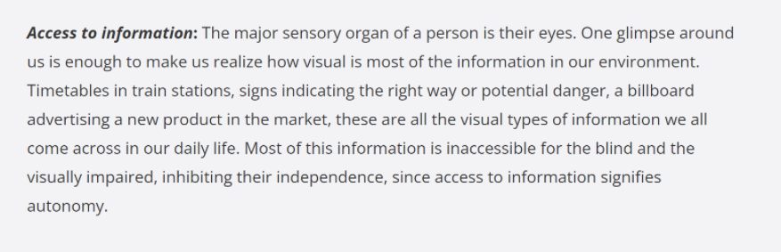

1. Observing users
User A Setting : LaCite apartment elevator
A blind middle aged man came into the laCite apartment elevator at night. He tried to press the button for his floor. After he pressed the button his finger touched the paper near the button panel. The paper had the information that the building will cut off the water supply tomorrow morning. He stood there and touched places around that area, tried to find out if there was any braille word but unfortunately it wasn't. He was confused and asked me to help (ask me what content was on the paper).
User B Setting: dollarama in Alexis Nihon
It was an afternoon after the last lecture. We were going to the dollarama inside the Alexis Nihon to buy some kitchen supplies and there was a blind elder man standing in front of the shelf of lamps with his white cane inside his pocket. He was walking around the shelf slowly and touched stuff one by one. Then he stopped his action and talked to the air: “Can you help me to find a Christmas tree light? I want white color light.” I passed one to him and took him to where the lights were located. I told him there are more colors and shapes, and I can see him picking a few more packages of lights and just standing there. Shake and touch, maybe 15 minutes long. From his actions I can see he was trying to buy a light that makes him satisfied. He looks frustrated just standing there touching and shaking to get more information about those products.
User C Setting: library located at La Chine
An elderly woman who was visually challenged tried to borrow a cooking book in front of the circulation desk of la chine library with her white cane on her left hand. The staff tried to find this book inside the system but the only version of this book was written in text form instead of braille. The staff asked the woman if she would be able to find someone to read out this book for her but the woman waved her head and said she lived by herself. The women pouted to show disappointment and left the library.
2. Identifying the problem
The visually impaired community have fantastic assistive technology and software to help them view content inside of smartphones: they have screen readers, braille keyboards, etc. However, we realize that they lack technology and software helping them read information which is not displayed by the phone/ laptop screen. For example, medical instruction, medicine name, passport information, information on the food package, words from traffic signals, and other word format instructions outside of the internet. This situation may get even worse when a visually ipaired person is trying to read a foreign language text.
reference:https://www.letsenvision.com/blog/challenges-blind-people-face-when-living-life
Based on this observation we came up with this idea which is to design an application that allows the blind user using phones to help them with the real world text-content: take a picture of the object, and its text will convert to a voice message/ speech of translated language. Right now, we only see the image to its corresponding speech. We haven't seen many ideas on images to translate speech, which is a great help for blind and visually impaired people to travel more easily to other foriegn countries. For our idea, no matter which language it is, the only thing they need to do is: choose language, take a photo, and listen.
3. Personas
aaaaaaa
4. Use cases
aaaaaaa
5. Related products
aaaaaaa
6. Product comparison
aaaaaaa
7. High-level design of system
aaaaaaa
8. Feasibility
aaaaaaa